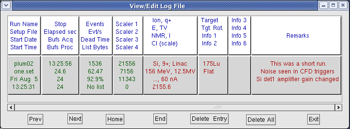
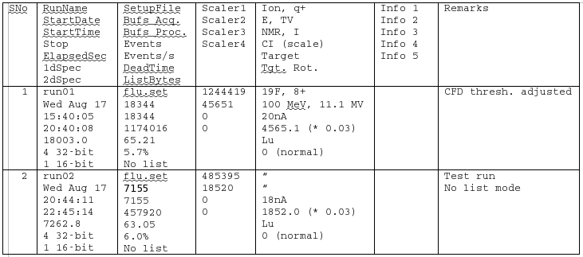

During acquisition, when runs are started and stoppped entries are made in the file lamps.log (in the directory
from where lamps is started). The data written has the following fixed information fields:
Run Name
Setup File
Start Date
Start Time |
Stop
Elapsed Sec
Bufs Acq
Bufs Proc |
Events
Evt/s
Dead Time
List Bytes |
Scaler 1
Scaler 2
Scaler 3
Scaler 4 |
Remarks |
(Only 4 scaler values are stored in lamps.log, if you have more scalers you will find them in
scaler.log)
In addition lamps.log can store 12 additional optional data fields.
The names of the fields themselves can be changed. By default (when LAMPS is started with no
lamps.log file) the fields are:
Ion, q+
E, TV
NMR, I
CI (scale) |
Target
Tgt. Rot.
Info 1
Info 2 |
Info 3
Info 4
Info 5
Info 6 |
These fields (as also the Remarks column) are to be filled by the user. The fields can be filled at
any time during or after the run. See View, Edit (below).
When View, Edit is selected a new window opens:

- To change any of the optional headings, click the heading.
- The data of the ongoing run or the last run will be displayed. For an ongoing
run, the second, third and fourth columns will show "No information"
- To view the data of another run use the Prev, Next, Home and End buttons.
- Click Delete Entry to remove the log file entry which is currently displayed.
- Click Delete All to remove all log file entries.
- The data for the fixed inforation fields (except) Remarks are inserted by LAMPS
and cannot be altered
- The data for the optional fields must by input the user. Click in the relevant area
and insert the information
This can be done at the end of the experiment, or offline on another computer where
the lamps.log file has been copied. A MS-Word file caled lampslog.rtf will be created in the working
directory. If you copy this file to a Windows partition or to a Windows PC, it can be opened in MS-Word.
You can also open it directly in Linux with OpenOffice.org, but in this case you will need to drag the
column separators of the table (to adjust the column widths) as shown below.
 |
| View of lampslog.rtf in OpenOffice.org
after adjusting the column widths |
A printout of the word file is very useful while working on the analysis. You could even export
the columns to an Excel worksheet.
The log file itself (lamps.log) is a text file with all the information in readable form
but lampslog.rtf is better formatted for printing, creating additional columns etc.